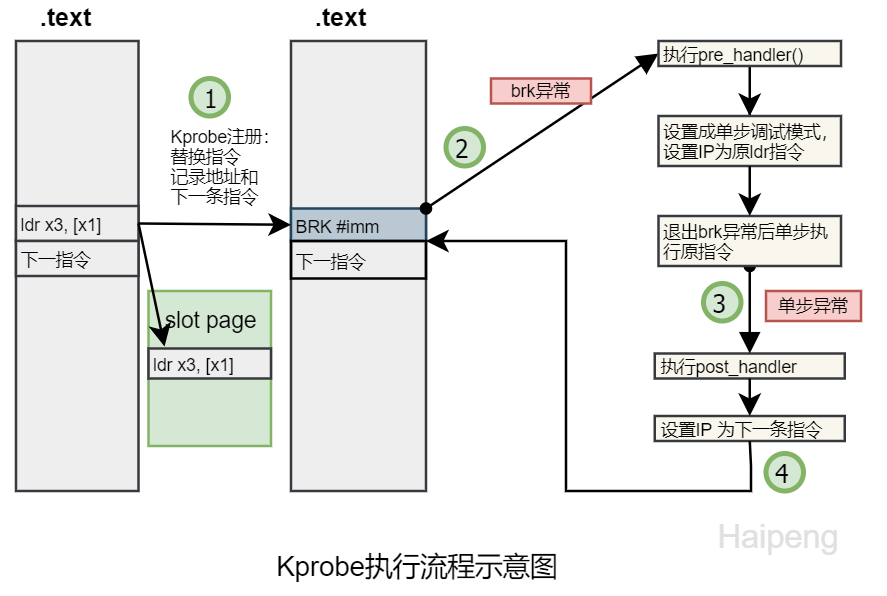

kprobe
作者: 陈林峰
Email: chenlinfeng25@outlook.com
概述
Linux kprobes调试技术是内核开发者们专门为了便于跟踪内核函数执行状态所设计的一种轻量级内核调试技术。利用kprobes技术，内核开发人员可以在内核的绝大多数指定函数中动态的插入探测点来收集所需的调试状态信息而基本不影响内核原有的执行流程。
kprobes技术依赖硬件架构相关的支持，主要包括CPU的异常处理和单步调试机制，前者用于让程序的执行流程陷入到用户注册的回调函数中去，而后者则用于单步执行被探测点指令。需要注意的是，在一些架构上硬件并不支持单步调试机制，这可以通过一些软件模拟的方法解决(比如riscv)。
kprobe工作流程

注册kprobe后，注册的每一个kprobe对应一个kprobe结构体，该结构中记录着探测点的位置，以及该探测点本来对应的指令。
探测点的位置被替换成了一条异常的指令，这样当CPU执行到探测点位置时会陷入到异常态，在x86_64上指令是int3（如果kprobe经过优化后，指令是jmp）
当执行到异常指令时，系统换检查是否是kprobe 安装的异常，如果是，就执行kprobe的pre_handler,然后利用CPU提供的单步调试（single-step）功能，设置好相应的寄存器，将下一条指令设置为插入点处本来的指令，从异常态返回；
再次陷入异常态。上一步骤中设置了single-step相关的寄存器，所以原指令刚一执行，便会再次陷入异常态，此时将single-step清除，并且执行post_handler，然后从异常态安全返回.
当卸载kprobe时，探测点原来的指令会被恢复回去。
内核目前对x86和riscv64都进行了支持，由于 riscv64 没有单步执行模式，因此我们使用 break 异常来进行模拟，在保存探测点指令时，我们会额外填充一条 break 指令，这样就可以使得在riscv64架构上，在执行完原指令后，会再次触发break陷入异常。
kprobe的接口
pub fn register_kprobe(kprobe_info: KprobeInfo) -> Result<LockKprobe, SystemError>;
pub fn unregister_kprobe(kprobe: LockKprobe) -> Result<(), SystemError>;
impl KprobeBasic {
pub fn call_pre_handler(&self, trap_frame: &dyn ProbeArgs)
pub fn call_post_handler(&self, trap_frame: &dyn ProbeArgs)
pub fn call_fault_handler(&self, trap_frame: &dyn ProbeArgs)
pub fn call_event_callback(&self, trap_frame: &dyn ProbeArgs)
pub fn update_event_callback(&mut self, callback: Box<dyn CallBackFunc>)
pub fn disable(&mut self)
pub fn enable(&mut self)
pub fn is_enabled(&self) -> bool
pub fn symbol(&self) -> Option<&str>
}
call_pre_handler在探测点指令被执行前调用用户定义的回调函数call_post_handler在单步执行完探测点指令后调用用户定义的回调函数call_fault_handler在调用前两种回调函数发生失败时调用call_event_callback用于调用eBPF相关的回调函数，通常与call_post_handler一样在单步执行探测点指令会调用update_event_callback用于运行过程中更新回调函数disable和enable用于动态关闭kprobe，在disable调用后，kprobe被触发时不执行回调函数symbol返回探测点的函数名称